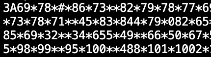
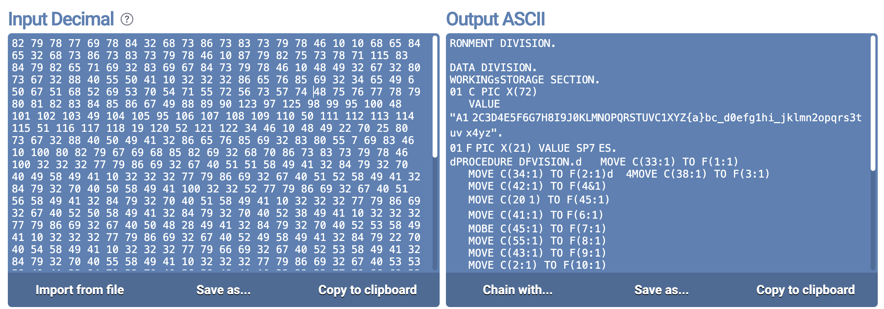
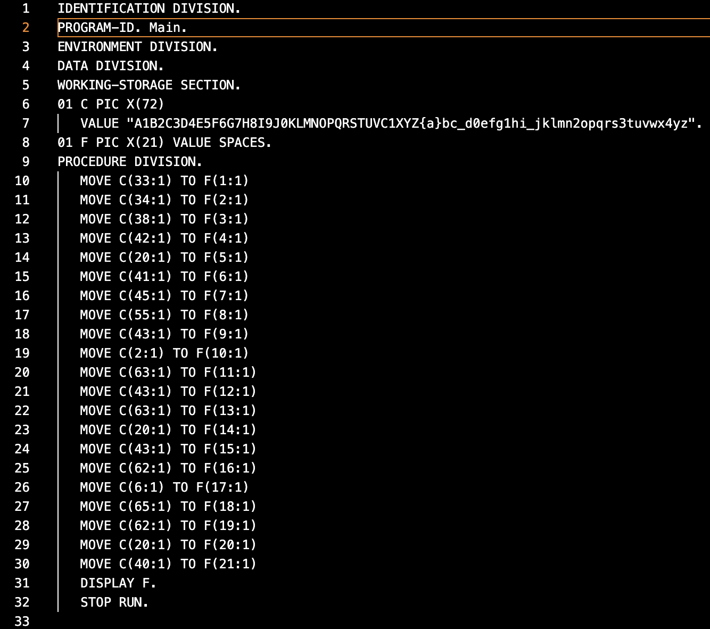
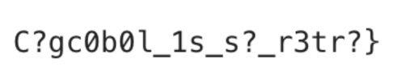

I participated in the DoD Cyber Sentinel Skills Challenge this weekend. It was a somewhat unusual CTF but I enjoyed it.
Anyway, here's one of the challenges I thought was interesting. It was all about taking a messy output and doing everything you can to clean it up which is fun.
Right now, I can't access the challenge statement :( I'll update this page if I can find it, but the gist of it was essentially "Here's an audio file, find the flag."
Here is what the audio sounds like.
For the first few seconds, the audio is only Rick Astley's "Never Gonna Give You Up". Then, you can hear a dial tone playing over the music. Eventually, the song ends and you only hear the dial tone for a few minutes.
So its pretty obvious that something's being encoded in these dial tones. As someone born in the new millennium, I was not already intimately aware of how dial tone encodings worked. Thankfully, I found this demo which gives a wonderfully intuitive explaination.
My original plan was to write a script to process this audio using SciPy or something. But pretty soon my head started to hurt thinking about trying to isolate each tone and extract the different frequencies. It seems like there'd be a lot of frustrating parameters to tune. Maybe a fun project for later, but for this CTF, I found this tool that seems to work out of the box.
The output looked something like this. I figured that this was supposed to be a series of decimal numbers delimited by '*'. I also figured that each number should be in the [0, 127], because I figured each number represented an ASCII character.
That sounds pretty guessy but its really not that big of a leap. There are only so many ways to encode digits [0,9].
Anyway, if you look at that data, you can see that clearly we have some cleaning up to do.
The first thing I did was clean up the audio itself by trying to eliminate the song playing in the background and isolate that dial tone. The tool I'm using apparently does some background noise filtration of its own, but I figured cleaning up the audio as much as possible couldn't hurt.
The technique to get rid of the song was the same one I used for this challenge.
Here's what that cleaned audio sounds like.
I ran the tool on the cleaned audio and then I cleaned up the output even more... by hand. Of course my first approach was to script this but the data is fairly small, and I think a human eye can catch quite a lot that my quick and dirty script would miss.
Here are some examples of changes I would make during this cleanup process:
You can be even more clever about this cleanup if you view this data in terms of what we are about to decode it into, but for me I found just looking at raw data was sufficient.
And for the big reveal, this data is encoded...
Broken COBOL code!
I kindly asked ChatGPT to fix my COBOL syntax in hopes of getting this code running.
Here is what the actual code should look like (courtesy of Not Leaky in the Slack)
My code was a bit more mangled, but ledgible enough for me to tell that this code was taking that string "C" and cobbling together various substrings and storing them in "F"
My "C" had a few mangled bytes, which I replaced with "?"
Again, I'm not old enough to have a COBOL environment set up, but this online compiler worked for me.
Running my code produced the following output:
It's not pretty, but it was good enough for me to realize the flag was C1{c0b0l_1s_s0_r3tr0}